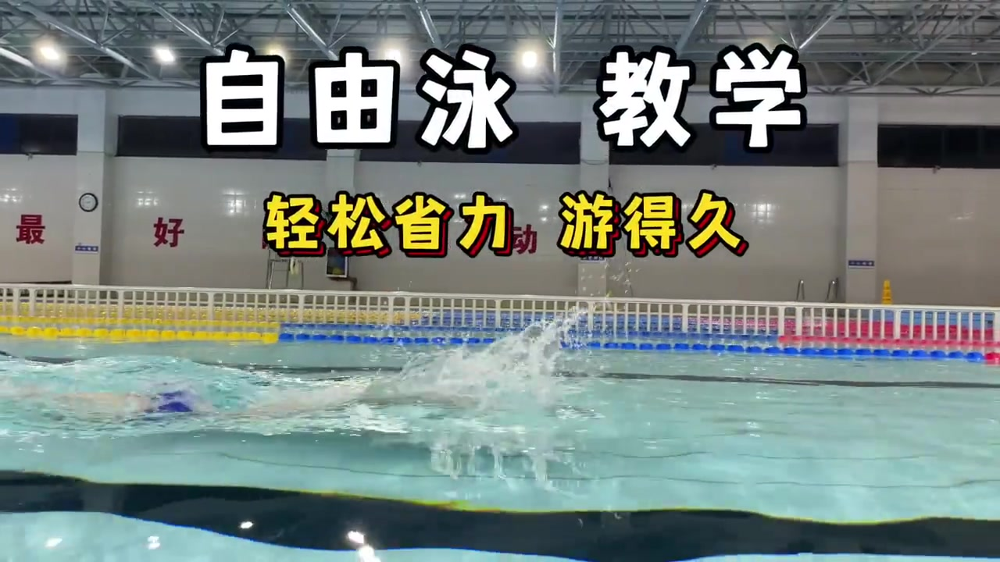
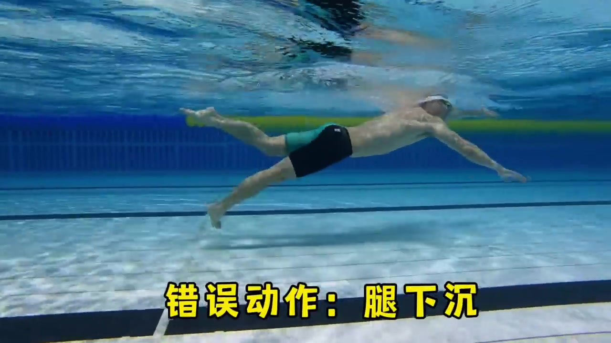
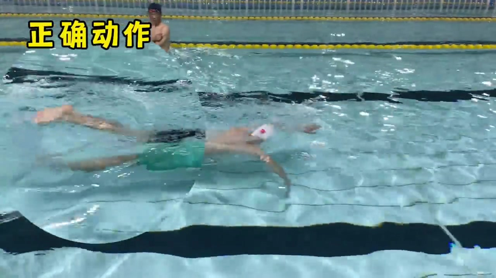
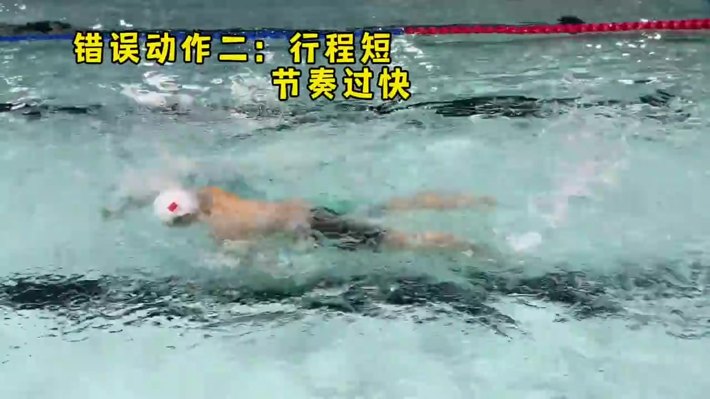
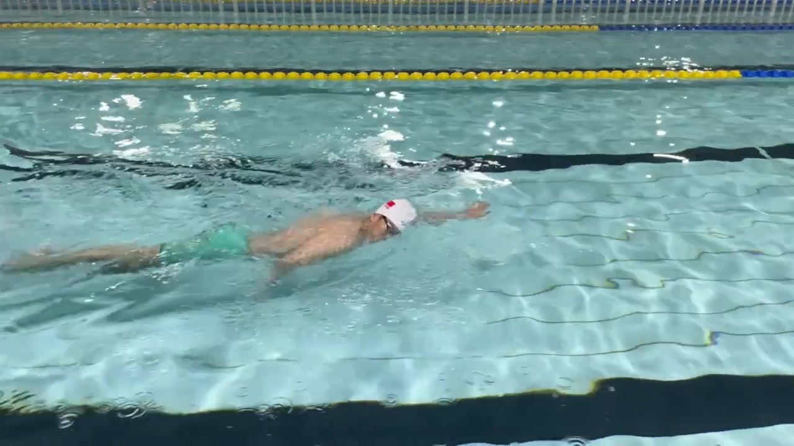
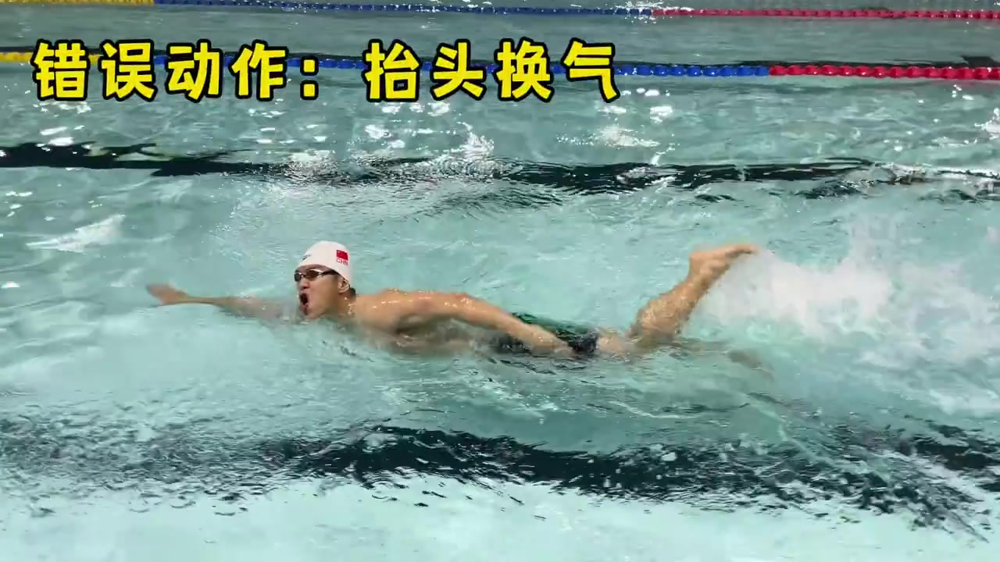
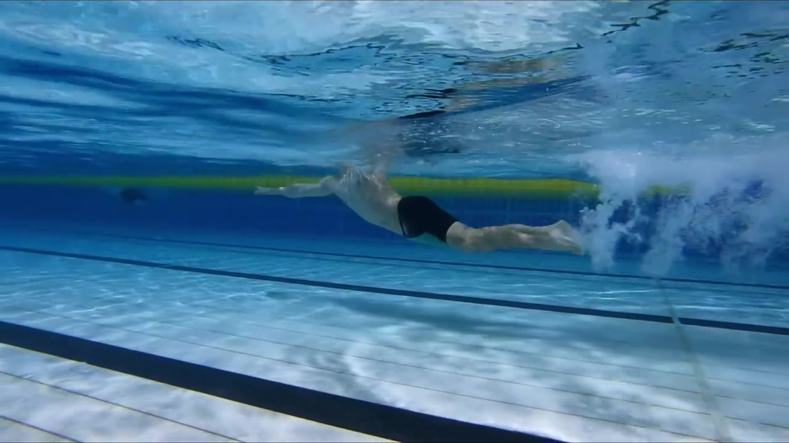
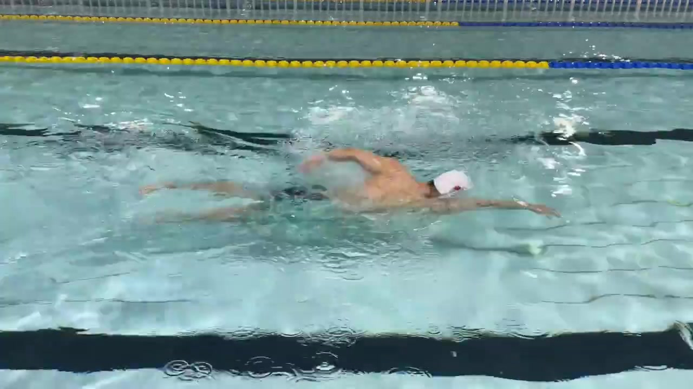

开场 · 00:00–00:12
粉丝提问：怎么才能游得轻松、游得久一点？
视频以字幕卡开场：「自由泳 教学」「最好的运动」「轻松省力 游得久」。博主站在泳池边直接对镜头说，最近有粉丝朋友问他，自由泳怎么样可以实现长游——游得轻松一点，时间和距离又能长一点。他给出的第一步很具体：先看看自己游泳的时候，这个腿是沉在水下，还是飘在水上。

检查点一 · 00:12–00:24
腿部姿态：水下对比「腿下沉」和「正确动作」
讲完第一步判断标准后，画面立刻给出水下实拍对照。字幕先打出「错误动作：腿下沉」，水下侧拍能明显看到泳者的腿部和腰部整体压得很低，几乎贴着泳池底部方向下坠；紧接着字幕切成「正确动作」，同一机位下泳者的腿部明显抬高、贴近水面，身体线条更平、更省力。博主随口播补充：除了打腿，接下来就是划手。


检查点二 · 00:24–00:45
划水行程要够长：太短变狗刨式，太赶则耗氧过快
第二个检查点是手臂划水。博主先给出下限：手臂的划水行程要足够长，行程太短就会游成「狗刨式」——字幕同步打出「错误动作二：行程短，节奏过快」，水下画面里泳者划水动作明显又碎又急。紧接着他补充上限：如果划水发力不够扎实（原文听感接近「太软」），会让划水动作非常吃力、消耗过多氧气，可能到25米、50米就游不动了。要拉长这个行程，关键要注意手臂前伸的动作。

正确示范 · 00:46–00:57
正确示范：手臂前伸抱水，把行程拉到位
紧接着字幕打出「正确示范」，镜头切到水上侧拍长镜头，配合黄色箭头图形标出手臂入水后向前延伸的轨迹：手先充分前伸抱水，再开始发力划水，整个行程被明显拉长，划水节奏也随之放慢、变得更从容，与前一段「行程短、节奏快」的错误示范形成直接对照。

检查点三 · 00:57–01:15
换气：别抬头救命式换气，身体会往下沉
最后一个检查点是换气。博主提醒：最后一步要做好换气动作，很多同学自由泳换气就跟「救命」一样——说的是新手常见的抬头猛吸一口气的姿势。紧接着字幕打出「错误动作：抬头换气」，水上镜头拍到泳者猛地把头和上半身抬得很高完成吸气；博主口播解释后果：上半身抬太高了，下半身就会掉下去，整个人会往下沉，破坏原本的流线型身形。

结语：自由泳换气是侧面呼吸
说完抬头换气的问题，博主给出正解：自由泳的换气是侧面呼吸，是这样子的。画面切到水下视角，完整展示一次侧头呼吸的划水周期——头随身体自然侧转出水面，吸气后迅速埋回水中，没有抬头、没有停顿。视频的最后几秒继续用同一组水上镜头收尾，泳者以侧面呼吸的节奏连续划动，作为「轻松、省力、游得久」这条主线的最终画面回应。

